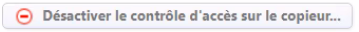

Dépannage - Messages d'erreur - Alertes
Watchdoc
Contexte : en tant qu'administrateur de Watchdoc, vous changez de serveur d'e-mails. Vous ajustez donc les paramètres du serveur SMTP dans Watchdoc (nom du serveur, mode de connexion, etc. dans l'interface Configuration des notifications).
Mais après modification, vous constatez que vous ne recevez pas l'e-mail de test.
Dans les logs, le message d'erreur suivant s'affiche : |MailNotifier "Mail '[Watchdoc]Test de notification par e-mail' unsuccessfully sent to [adresse_email_test]. [...] The SMTP server has unexpectedly disconnected."
Cause : ce problème survient parce que le nouveau serveur d'e-mails ne supporte pas la commande "StartTls" (serveur configuré en mode TLS obligatoire (mandatory TLS)) alors que, par défaut, Watchdoc établit une connexion TLS/SSL en mode différé (opportuniste). La connexion échoue donc.
Résolution : pour résoudre le problème, il convient de mettre à jour Watchdoc et WSC en version 6.1.1.5626 et de choisir la configuration Mode de connexion TLS : immédiat (cf. Configurer les notifications).
Contexte :lorsque l'administrateur lance l'outil WatchdocGDPRComplier pour anonymiser les travaux d'impression d'un utilisateur, l'outil affiche le message d'erreur suivant : "An error has occured while fetching document's data. Cannot decrypt value that uses a custom AES policy because we don't know the decryption key!"
Cause : ce problème survient parce que le chiffrement AES, activé sur Watchdoc, empêche l'opération.
Résolution : pour résoudre le problème, désactivez l'obfuscation des mots de passe avec AES durant l'opération d'anonymisation, puis réactivez-la une fois l'opération terminée (Menu principal > section Configuration > Configuration avancée > Configuration système > section Sécurité > paramètre Obfuscation : Activer l'obfuscation des mots de passe...).
Contexte : la transformation de spools est suggérée sur une file. Après avoir lancé un travail d'impression en couleur, l'utilisateur refuse la transformation en noir et blanc. Son document disparaît de la liste des travaux en attente.
Cause : lorsque la transformation est refusée, le spool n'est plus pris en charge par le spooler custom (spooler Doxense) mais est transféré à la file shadow. L'erreur peut alors provenir d'un dysfonctionnement de la file shadow.
Résolution : vérifiez l'état de la file shadow. Si elle est hors-ligne, redémarrez-la. Par ailleurs, si vous n'avez pas été informé du dysfonctionnement de la file shadow, vérifiez également les paramétrages SNMP pour permettre la remontée d'informations.
Contexte : après avoir lancé des demandes d'impressions, certains utilisateurs ne les retrouvent pas sur le WES du périphérique et ne peuvent donc pas les débloquer.
En consultant la liste des travaux en file d'attente, l'administrateur constate que le compte utilisateur est suivi d'un point d'interrogation et que le chiffre 0 s'affiche dans la colonne "Pages". Au survol, l'info-bulle affiche "Analyse du document en cours".
Cause : le problème semble être dû à un processus externe à Watchdoc qui bloque le transfert du spool.
Résolution : vérifiez les règles qui s'appliquent sur le dossier de spool de Watchdoc (situé dans C:\Windows\system32\spool\PRINTERS par défaut). Si les antivirus, droits et/ou EDR bloquent les flux, il convient d'appliquer des exceptions pour résoudre le problème.
Contexte : dans l'interface de configuration de Watchdoc, le nom attribué à la file universelle par défaut ne s'affiche pas correctement. A la place, c'est la clé WML qui s'affiche.
Cause : la clé WML n'est pas traduite.
Résolution : il convient de mettre à jour le fichier de configuration Watchdoc en remplaçant la valeur $wml/queue par $WML{queues/queue/UNIVERSAL.GLOBAL/queue-description} ou en mettant Watchdoc à jour dans une version supérieure à la v. 6.1.1.5500.
Contexte : lorsque Watchdoc fonctionne avec une base de données Postgre SQL, il arrive qu'une saturation survienne, provoquant le blocage de Watchdoc.
Dans les fichiers traces, on trouve le message suivant : "Internal error while connecting to database pgsql://postgres@localhost/printlinkstats: The connection pool has been exhausted, either raise 'Max Pool Size' (currently 100) or 'Timeout' (currently 5 seconds) in your connection string. || InnerException : [System.TimeoutException]".
Un redémarrage du service règle temporairement le problème.
Cause : cette anomalie est due au composant qui communique avec la base de données Postgre SQL. Ce dernier ne ferme pas les connexions, autorisant ainsi un trop grand nombre de communications avec la base de données, ce qui finit par provoquer une saturation du serveur.
Résolution : il convient de mettre à jour Watchdoc en v. 6.1.1.5486 qui contient une correction des composants de communication.
Contexte : lors de l'installation de Watchdoc, après avoir sélectionné le fichier de licence, un message informe que la licence est destinée à un autre produit.
Cause : le fichier de licence sélectionné n'est pas celui qui est destiné à Watchdoc.
Résolution : si vous avez reçu plusieurs fichiers de licences de la part de Doxense, vérifiez ces différents fichiers et sélectionnez celui qui convient au serveur sur lequel vous souhaitez installer Watchdoc.
Vous pouvez éditer le fichier de licence avec un éditeur de texte et vérifier les valeurs correspondant à l'adresse du serveur, à la date de validité, la (les) marque(s) et nombre des WES autorisés.
Contexte : alors qu'un utilisateur a envoyé une demande d'impression, son document n'est pas imprimé. Dans la liste des travaux en attente, le travail est accompagné du message d'erreur suivant : "failed to locate the spool file path".
Dans les fichiers traces (logs), l'administrateur retrouve ce message, suivi de l'information suivante : "no corresponding SHD or SPL file found! Please disable Server File Pooling".
Cause : l'erreur est due à l'activation du regroupement de ports (File pooling) au niveau du port du serveur d'impression Windows.
Résolution : sur le serveur d'impression, accédez au gestionnaire d'impression et rendez-vous sur la gestion du port de l'imprimante concernée par le problème. Dans les paramètres du port, désactivez le regroupement de ports (File pooling). Si le file pooling ne peut être désactivé depuis le serveur, (c'est le cas sur d'anciens systèmes), rendez-vous dans la configuration système de Watchdoc, section Spouleur d'impression et vérifiez que la case correspondant au paramètre SHD est bien décochée. (Cf. Configuration Système).
Contexte : dans un domaine, après une modification apportée à la configuration de la planification des rapports, l'adresse mail de destination configurée est spammée par des notifications envoyées par le serveur master ainsi que par tous les serveurs slaves.
Cause : cette anomalie est due au fait que la tâche de planification est répliquée par défaut sur tous les serveurs du domaine.
Résolution : pour résoudre ce problème, il convient de mettre à jour Watchdoc en v. 6.1.1.5458 qui contient un correctif. A partir de cette version, seul le serveur master envoie une notification lorsqu'une modification est apportée à la configuration de la section "planification" des notifications.
Contexte : dans un contexte où les quotas sont utilisés et après panne de la base sur laquelle sont gérés les quotas, après s'être authentifié sur le WES, l'utilisateur voit apparaître le message "serveur injoignable".
Dans les logs, les messages suivants apparaissent : "SQL|SQLProxy "Failed to connect to the MSSQL server atdbtype=MSSQL"
et "WES|WesDeviceSessionHandler "Error caught while trying to initialize user quotas for Token".
Cause : cette anomalie est due à la perte temporaire de connexion à la base de quotas.
Résolution : pour résoudre ce problème, il convient de désactiver les quotas tant que la base de données est injoignable, puis les réactiver une fois la connexion rétablie.
Contexte : alors que la version Watchdoc 6.1.0.5267 est installée et fonctionne correctement, après une mise à jour 24H2 du serveur MS Windows, on constate que l'authentification fonctionne, mais qu'il est ensuite impossible d'accéder à l'interface d'administration ou à la page "Mon compte".
Il arrive également que le problème survienne alors que l'on navigue depuis un moment dans l'interface d'administration ou la page "Mon compte".
Un message d'erreur JSE Error: XSLT Transform failed - XSLT Error : défaillance irrémédiable (catastrophic faillure) s'affiche.
Cause : ce problème est probablement dû à une nouvelle politique de gestion de l'accès mémoire par les processus.
Résolution : pour résoudre ce problème, il convient de mettre à jour une clé de registre liée à Internet :
-
à l'aide dun compte disposant des droits d'édition, rendez-vous dans la base de registre du serveur qui héberge Watchdoc ;
-
dans la base de registre, rendez-vous dans le dossier HKEY_LOCAL_MACHINE\SOFTWARE\Policies\Microsoft\Internet Explorer\Main\,
-
dans ce dossier, créez la clé suivante :
-
Nom : JScriptReplacement
-
Type : REG_DWORD
-
Données 0x00000000 (0)
-
-
Enregistrez cette clé.
-
Redémarrez le service Watchdoc.
-
Vérifiez que, depuis le serveur, vous accédez de nouveau aux interfaces web (interface d'admiinistration et page Mon compte) après authentification.
N.B. : si le problème persiste lorsque vous tentez d'accéder aux pages web depuis un poste de travail (hors serveur), appliquez la modification de la clé de registre sur le poste de travail.
N.B. : en raison de cette gestion de caches spécifiques à la mise à jour 24H2, il est possible que l'affichage des pages web de Watchdoc soit plus long qu'avec la précédente version de MS Windows server.
Contexte : après avoir supprimé ou modifié une file d'impression depuis Watchdoc ou WSC, l'administrateur se rend compte que les statistiques de cette file d'impression n'apparaissent plus dans l'interface de consultation des statistiques.
Cause : ce problème est dû à un dysfonctionnement de Watchdoc / WSC qui entraîne la suppression des statistiques d'une file supprimée ou modifiée.
Résolution : pour résoudre cette anomalie, il convient de mettre à jour en version v. 6.1.0.5318 qui contient un correctif. Ce correctif repose sur la création d'une file externe dans laquelle sont archivées les statistiques.
Contexte : après mise à jour de Watchdoc en v. 6.1.0.5221 dans une configuration en mode déporté (serveur IIS et serveur Watchdoc sur 2 serveurs différents), on constate que les interfaces web (interface d'administration ou page "Mon Compte") ne sont plus accessibles. Lorsqu'on tente d'y accéder, après un long moment de chargement, un message d'erreur s'affiche : "A connection attempt failed because the connected party did not properly respond after a period of time, or established connection failed because connected host has failed to respond".
Diagnostic : le service est momentanément indisponible.
Cause : ce problème est probablement dû aux règles de sécurisation du port 5744 automatiquement appliquées par la nouvelle version.
Résolution : il convient d'ajouter une règle dans le firewall c afin d'autoriser le site web à accéder à Watchdoc (cf. Erreur Watchdoc is not responding).
Contexte : on constate de grosses lenteurs lors de l'impression et la nécessité de relancer la demande une deuxième fois pour obtenir l'impression.
Dans les fichiers traces de Watchdoc, on relève le message suivant : SPL|JobQueue "Deleted [NoReason] Job[2657]"
Cause : le problème peut être dû au chiffrage des titres des documents dans la file d'attente.
Résolution : dans l'interface d'administration de Watchdoc, se rendre dans les propriétés de la file, section Mode Expert et désactiver l'option "chiffrer le titre des documents dans la file d'attente partagée" (cf. Deleted [No Reason].
Contexte : un opérateur qui disposait jusqu'alors d'un droit de configuration sur l'interface Watchdoc ne peut plus accéder à l'interface de configuration. Le message suivant s'affiche : "Vous n'êtes pas autorisé à accéder à cette section" puis il est déconnecté.
Cause : ce comportement de Watchdoc est lié à la modification des droits sur le rôle, le groupe d'utilisateurs ou l'utilisateur.
Il ne s'agit donc pas d'un problème, mais de la conséquence d'un changement de paramétrage qui a eu lieu alors que l'opérateur était connecté.
Résolution : si les droits de l'opérateur ont été modifés à tort, il peut alors contacter l'administrateur Watchdoc afin de récupérer ses droits.
Contexte : lorsqu'un utilisateur authentifié tente d'accéder à Watchdoc depuis un navigateur Safari ou Firefox, le SSO ne fonctionne pas : si l'utilisateur ne connaît pas ses identifiants (domaine), un message d'erreur l'informe que l'accès est impossible : 401 – Non autorisé: accès refusé en raison d’informations d’identification non valides.
Cause : ce dysfonctionnement survient en raison d'une incompatibilité entre les navigateurs Safari et Firefox avec le module SSO (Single Sign On) de Watchdoc.
Résolution : il convient de configurer une instance web Watchdoc comportant un formulaire d'authentification (cf. Problème d'authentification à Watchdoc depuis Safari ou Firefox).
Contexte : après une mise à jour manuelle de Watchdoc dans un environnement fonctionnant avec le framework .NET 4.7.2, Watchdoc ne redémarre plus. Dans l'outil en ligne de commande, le message d'erreur suivant est affiché : System error 1064 has occurred.
Cause : ce problème est lié à la mise à jour manuelle des fichiers du kernel lorsque Watchdoc fonctionne avec le .Net framework 4.7.2.
Résolution : convient de remplacer les fichiers du dossier Watchdoc par ceux de la nouvelle version (cf. Problème de redémarrage après mise à jour de Watchdoc).
Contexte : les périphériques contrôlés par Watchdoc possèdent parfois leurs propres compteurs. Or, il arrive que l'on constate une différence entre le compteur d'un périphérique et les données de comptabilisation remontées dans Watchdoc, une incohérence ou une lacune dans les données de comptabilisation.
Cause : pour les besoins de l'analyse, il est nécessaire de procéder à la collecte des données et à l'envoi des sources d'analyse (fichiers SNMP ou spools) au Support Doxense® via Connect, car les causes peuvent être nombreuses (cf. Gérer les problèmes de compteurs sur les périphériques d'impression).
Contexte : après une mise à jour de Watchdoc sur une configuration comportant un serveur IIS avec le kernel Watchdoc et WEB et un serveur avec le kernel Watchdoc, l'accès à l'interface d'administration de Watchdoc est impossible et le message d'erreur s'affiche dans le navigateur.
Cause : les 2 kernels n'ont pas été mis à jour simultanément et ne peuvent pas communiquer car ils sont dans 2 versions différentes.
Résolution : mettre à jour le kernel qui ne l'est pas.
Contexte : après une mise à jour de Watchdoc vers une version mineure, l'interface d'administration affiche le message d'erreur suivant : "Can't create Crystal object" 006~ASP 0177~échec de server.CreateObject~80131040 code erreur 0x80131040"
Cause : l'erreur peut être due à la clé de registre "crystal" qui est enregistré dans une version antérieure.
Résolution :
-
se rendre dans la base de registre et y rechercher toutes les occurences de "crystal" et les supprimer
-
faire un IISreset
-
exécuter regproxy.bat en admin
-
refaire un IISreset
Contexte : Depuis le Menu principal de Watchdoc, lorsqu’on clique sur la section Configuration > Imprimantes & périphériques il peut arriver que le message d'erreur suivant s'affiche : "Error while calling method AdminDevicesList - Description : Index was outside the bounds of the array."
Cause : ce dysfonctionnement survient lorsque la redirection MSTSC des imprimantes est activée au niveau du serveur.
Résolution : il convient donc de désactiver la redirection MSTSC des imprimantes au niveau du serveur.(cf. Message d'erreur lors de l'accès à la configuration des Imprimantes et périphériques).
Contexte : lorsque Watchdoc est installé pour fonctionner dans une langue non-latine, il arrive que certains caractères soient mal affichés notamment dans les messages d'erreurs envoyés aux utilisateurs ou aux administrateurs.
Cause : ce dysfonctionnement est dû au mode de collation des données textuelles dans la base de données SQL qui a pour conséquence de ne pas permettre de gérer les caractères non-latins.
Résolution : il convient de modifier l’installation de Watchdoc pour demander de choisir le jeu de caractères (charset) et le mode de collationnement, puis reporter cela dynamiquement dans le script de création de la base.
Nous préconisons l’utilisation d’une collation à langage case insensitive pour la BDD, comme par exemple Latin1_General_100_CI_AI.
Contexte : il arrive que l'on constate une différence entre le compteur d'un périphérique et les données de comptabilisation remontées dans Watchdoc.
Cause : ce problème peut avoir de multiples causes.
Résolution : procéder à une analyse méthodique de la (des) cause(sà (cf. Gérer les problèmes de compteurs sur les périphériques d'impression).
Contexte : lorsque des travaux d'impression sont demandés à partir d'applications natives de MS Windows 10 (telles que Edge, Photo, paint, etc.), il arrive que le format XPS soit considéré comme invalide.
Cause : Watchdoc ne gère pas la transformation de spool pour des impressions "non-RAW.
Résolution : il convient d'activer ou de forcer le CSR sur les postes clients,(cf. Problèmes de spool au format XPS - Format invalide).
Contexte : depuis le Menu principal de Watchdoc, lorsqu’on clique sur la section Configuration > Imprimantes & périphériques il peut arriver que le message d'erreur suivant s'affiche :"Error while calling method AdminDevicesList Description : Index was outside the bounds of the array."
Cause : ce dysfonctionnement survient lorsque la redirection MSTSC des imprimantes est activée au niveau du serveur.
Résolution : il convient donc de la désactiver la redirection MSTSC des imprimantes au niveau du serveur.
GPEDIT.MSC Computer Configuration>Policies>Administrative Templates>Windows Components>Remote Desktop Services>Remote Desktop Session Host>Printer Redirection>Do Not allow client printer redirection. (enable)
Contexte : lorsque vous essayez de créer, de partager une imprimante ou de l'intégrer à Watchdoc, le message d'erreur suivant peut apparaître : "Le mappeur de point final n'a plus de point final disponible. Windows can't open Add Printer. There are no more endpoints available from the endpoint mapper"
Cause : les deux causes les plus fréquentes de ce type d'erreur sont :
-
une instabilité ou crash du spouleur Windows ;
-
un problème du service pare-feu Windows.
Résolution : il convient de vérifier l'état du spouleur et vérifier l'état du pare-feu. (cf. Mappeur de point final).
Contexte : L'impression n'est plus possible et, lors de l'installation de l'imprimante, le message d'erreur suivant s'affiche : "Faites-vous confiance à cette imprimante ? Windows doit télécharger et installer un pilote à partire de l'ordinateur... N'autorisez l'opération que si vous faites confiance à l'ordinateur..."
Cause : suite à la défaillance Print Nightmare, MS Microsoft a créé un correctif comportant une erreur.
Résolution : il convient de désactiver la clé de registre compromise (cf. Problèmes d'impression PrintNigthmare).
Contexte : suite à un dysfonctionnement de Watchdoc, l'analyse des logs met en évidence la présence de fichiers de type FP*.SPL.
Cause : des fichiers de type "File Polling" générés par MS Windows ne sont pas supprimés automatiquement.
Résolution : il convient de supprimer ces fichiers (cf. Erreur liée aux fichiers FP*).
Contexte : des incidents sont liés aux flux entrants dnas Watchdoc.
Cause : les exclusions pour les flux Watchdoc dans Windows Defender® ne sont pas gérées correctement.
Résolution : il convient de vérifier la configuration des ports et droits associés (cf. Gestion des flux entrants avec Windows Defender®).
Contexte : il arrive que sur le journal d'événements d'un serveur (EventLog), plusieurs événements rapportent une erreur (Error) de la source TerminalServices-Printers.
Cause : la plupart de ces événements sont dus aux rapports automatiques des pilotes du Viewer PDF envoyés sur le poste des administrateurs quand ils se connectent au serveur d'impression par le biais d'un utilitaire d'accès distant (type Remote Desktop Services).
Résolution : il est nécessaire de désactiver le rapport sur le serveur d'impression.(cf. Désactiver le rapport Remote Desktop Services Printer).
Contexte : au cours d'une mise à jour de Watchdoc, l'opération est suspendue et le message d'erreur suivant est affiché dans une pop-up : Doxense.AuthManager.dll is blocked
Cause : cette anomalie peut être due à l'outil de création des files d'impression QueueCreationTool.
Résolution : fermez l'outil QueueCreationTool.exe et relancez la mise à jour.
Contexte : lors de l'installation d'une file partagée sur un serveur d'impression, le message d'erreur "0x0000011b" s'affiche sur les postes de travail.
Cause : en janvier 2021, Microsoft a publié un correctif pour patcher la faille de sécurité CVE-2021-1678. C'est ce correctif qui provoque l'erreur sur les postes de travail 0x0000011b.
Résolution : il convient de modifier la valeur d'une clé de registre située dans le dossier KEY_LOCAL_MACHINE\System\CurrentControlSet\Control\Print. Si la valeur "RpcAuthnLevelPrivacyEnabled" n'existe pas,créez-la au format DWORD-32 manuellement à partir de l'éditeur de Registre avec la valeur 0 (cf. Message d'erreur "0x0000011b" sur les postes de travail).
Contexte : après mise à jour de Watchdoc, il est impossible d'enrôler un badge : lorsqu'un utilisateur présente son badge non-enrôlé sur le périphérique d'impression, un message d'erreur s'affiche ("compte utilisateur inconnu" ou "mot de passe incorrect") ..
Cause : ce dysfonctionnement peut être dû à un paramétrage spécifique de l'annuaire CARDS dans lequel sont enregistrés les badges.
Résolution : il convient de vérifier le paramètre "Routage" de l'annuaire CARDS :(cf. Enrôlement des badges impossible).
Contexte : après mise à jour de Watchdoc (depuis une version antérieure à la v. 5.0), l'authentification des utilisateurs par badge ne fonctionne plus. Par ailleurs, ces badges ne peuvent pas être retrouvés dans la Console de Supervision (WSC) (statut "inutilisable").
Cause : ce dysfonctionnement peut être dû à un changement de nom d'un champ de la table SQL des badges.
Résolution : il convient de mettre à jour les identifiants des badges dans la table SQL en exécutant la commande suivante dans MS SQL Management Studio (cf. Badges en statut inutilisable) :
UPDATE dbo.cards
SET crdLOCKED = '0'
FROM dbo.cards
WHERE crdLOCKED = '2'
Contexte : les utilisateurs ne reçoivent plus de notifications. Dans Watchdoc, lorsque la fonction de notification exploite Exchange Online, la section Etat du système des Notifications affiche le message d'alerte suivant : Le dernier e-mail n'a pas été envoyé correctement. L'erreur suivante s'est produite : Failed to get an accessToken from Azure
Cause : ce dysfonctionnement est sans doute lié au Secret du client permettant d'accéder à l'application, ce Secret étant doté d'une date d'expiration qui nécessite un renouvellement.
Résolution : vérifiez la valeur du Secret-id dans MS Entra, renouvelez le secret si nécessaire et reportez sa valeur dans l'interface de configuration des Notifications Watchdoc (cf. Configurer les notifications).
Contexte : lors d'une tentative de réparation d'une version Watchdoc Express à l'aide du bouton Repair de l'assistant (wizard), l'opération semble se réaliser correctement, mais les raccourcis sont effacés et Watchdoc désinstallé.
Cause : ce dysfonctionnement est dû à un dysfonctionnement du bouton
Résolution : ne pas utiliser le bouton Repair et procéder à une mise à jour du produit.
WSC - Watchdoc Supervision Console
Contexte : dans WSC, en tant qu'administrateur, je lance la propagation de la mise à jour après avoir téléchargé le package de la nouvelle version.
Le message d'erreur suivant s'affiche dans l'interface de suivi des opérations : [GetPackageFromMaster] [...] Security check failed. Removing package.
Cause : ce message apparaît lorsque les prérequis d'écriture et lecture sur les dossiers C:\Windows\System32\CatRoot et CatRoot2 ne sont pas respectés.
Résolution : appliquez les droits en écriture et lecture sur les dossiers C:\Windows\System32\CatRoot et CatRoot2 (cf. Mettre à jour un domaine > Prérequis).
Contexte : après mise à jour de Watchdoc/WSC (v. 5.4 vers 6.1.1), certaines actions ne sont plus possibles dans la Console de supervisions et renvoient des messages d'erreur : la modification ou l'ajout de badges, l'ajout de comptes invités, l'import en masse de badges, la modification de configurations.
Des interfaces affichent le message "BadRequest" ou la page web affiche le message "This page isn't working right now"
Cause : ce message apparaît lorsque WSC a précédemment été configuré pour être accessible via le port 5757 non-SSL. La version 6.1.1 exigeant plus de sécurité, ce port a été remplacé par le port SSL 5756.
Résolution : configurez le port SSL 5756 comme port d'accès à WSC.
Contexte : lors de l'ajout d'un pilote d'impression dans WSC sur un domaine (master/slaves), un message d'alerte informe que l'opération s'est bien déroulée pour le serveur master, mais le message d'erreur suivant s'affiche pour les slaves : Failed to add driver on server [nom_du_serveur]. Reason: 'driver package is not WHQL valid'.
Cause : ce message apparaît lorsque WSC n'arrive pas à remonter la chaîne de certification WHQL du pilote.
Résolution : mettez à jour la liste des certificats roots de tous les serveurs du domaine (master et slaves).
Contexte : lors de la création d'un compte dans la base Invités de WSC, dans le formulaire Ajouter un invité, le champ Compte restou de la mise à jour d'une file d'attente avec PnP, dans un environnement utilisant un compte de service gMSA, après avoir ajouté le package de pilotes, lors de la création d'une file d'attente, un message d'erreur s'affiche lorsque vous sélectionnez le pilote associé : "An unexpected exception occured while trying to install driver. Reason was ERROR_ACCESS_DENIED: Access Denied Failed to UploadPrinterDriverPackage"
Cause : ce problème se produit lorsque le compte de service ne dispose pas des droits suffisants pour télécharger le package du pilote.
Résolution : vérifiez que le compte de service dispose des droits spécifiés dans les prérequis. Si ce n'est pas le cas, ajoutez les droits manquants.
Contexte : lors de la création ou de la mise à jour d'une file d'attente avec PnP, dans un environnement utilisant un compte de service gMSA, après avoir ajouté le package de pilotes, lors de la création d'une file d'attente, un message d'erreur s'affiche lorsque vous sélectionnez le pilote associé : "An unexpected exception occured while trying to install driver. Reason was ERROR_ACCESS_DENIED: Access Denied Failed to UploadPrinterDriverPackage"
Cause : ce problème se produit lorsque le compte de service ne dispose pas des droits suffisants pour télécharger le package du pilote.
Résolution : vérifiez que le compte de service dispose des droits spécifiés dans les prérequis. Si ce n'est pas le cas, ajoutez les droits manquants.
Contexte : lors de l'ajout d'un pilote, le message d'erreur suivant s'affiche dans l'interface Ajouter un pilote d'impression : An unexpected error occured while trying to get infos about package. TypeError: t.json.Farorite is undefined.
Cause : ce comportement survient lorsque l'environnement dans lequel est installé le pilote est fortement sécurisé. Le dossier dans lequel WSC doit décompresser l'archive est dans doute verrouillé.
Résolution : contactez le Support Doxense via Connect pour recevoir la procédure de résolution.
Contexte : lors d'une mise à jour des serveurs d'un domaine à partir de la mise à jour du serveur maître, lorsque l'on clique sur le bouton Propager ou le bouton Appliquer, WSC ouvre systématiquement l'interface Ajouter une nouvelle mise à jour.
Cause : ce comportement survient lorsque le package de mise à jour n'a pas été préalablement téléchargé ou que le package téléchargé est corrompu.
Résolution : il convient de charger un nouveau package de mise à jour valide (à partir du site doc.doxense.com).
Contexte : lors de l'utilisation de DriverPackageExtractor, après avoir cliqué sur "Prepare package and analyse", le message d'erreur suivant s'affiche : "Une exception non gérée s'est produite dans votre application. [] Le processus ne peut pas accéder au fichier [Nom_fichier] car il est en cours d'utilisation par un autre processus".
Cause : il est possible que cette erreur soit due à un antivirus qui bloque l'accès au fichier .inf du pilote.
Résolution : il convient de désactiver l'antivirus ou de le configurer de manière à ce qu'il autorise l'accès aux fichiers utilisés par Watchdoc.
Cause : lors d'une mise à jour des serveurs d'un domaine, lorsqu'on tente d'ajouter un package, l'initialisation réussit, mais la mise à jour échoue. Le message "Ce package de mise à jour n'est pas sécurisé" s'affiche.
Cause : ce comportement survient lorsque le package de mise à jour contient un fichier update.cat signé par un certificat non valide ;
Résolution : il convient d'installer un certificat valide (cf. Impossible de mettre à jour : package non-sécurisé).
Contexte : ce message apparaît après mise à jour de WSC d'une version antérieure à la v. 6.0 vers la v. 6.0 ou supérieure.
Cause : la licence n'est plus obligatoire pour WSC à partir de la v. 6.0. Pour cette version et les versions supérieures, la licence Watchdoc sert également à WSC.
Résolution : il convient de réinitialiser la licence WSC (cf. Réinitialiser la licence dans Installer WSC).
Contexte : ce message apparaît après téléchargement d'un pilote d'impression dans la Console de Supervision.
Cause : le pilote d'impression téléchargé n'est pas certifié.
Résolution : il convient de télécharger un nouveau pilote signé avec WHQL Signature numérique attribuée aux packages de pilotes répondant aux exigences des tests HLK (Windows Hardware Lab Kit) par Microsoft pour garantir la sécurité du pilote.
(Source : https://learn.microsoft.com).
Signature numérique attribuée aux packages de pilotes répondant aux exigences des tests HLK (Windows Hardware Lab Kit) par Microsoft pour garantir la sécurité du pilote.
(Source : https://learn.microsoft.com).
Contexte : ce message apparaît après téléchargement d'un pilote d'impression dans la Console de Supervision. Le chargement prend du temps et s'achève par le message : "An error occured while trying to get infos about the package. (Status: 413) RequestEntityTooLarge.
Cause : le package contenant le pilote d'impression téléchargé est trop lourd.
Résolution : il convient d'alléger le package du pilote pour ne conserver que les fichiers attendus par WSC (cf. Alléger le package d'un pilote) ou de mettre à jour Watchdoc/WSC en version 6.1.0.4996.
Contexte : lorsqu'on clique sur le raccourci permettant d'accéder à l'interface d'administration de WSC, un message d'erreur informe "Impossible d'accéder à WSC : erreur HTTP 404.0 - Not fourn - La ressource que vous recherchez a été supprimée, a été renommée ou est provisoirement indisponible"
Cause : ce problème peut être dû au fait que le port d'écoute 5756 est utilisé par un autre service.
Résolution : il convient de relancer des services depuis la console de gestion des services.
Contexte : (novembre 2024) depuis la Console de Supervision, on tente d'installer un pilote Ricoh ou Epson à l'aide du DriverPackageExtractor. Ce pilote a été téléchargé depuis les sites officiels. Mais l'installation échoue et le message suivant s'affiche : "Unable to install [nom_du_pilote]. The system cannot find the file specified". Dans les logs, le message suivant s'affiche : "An unexpected exception occured while trying to install driver. Error was: 'Failed to UploadPrinterDriverPackage(driverName='[NAME]' Result code: -2147024894)'".
Contournement : il convient d'installer le pilote à l'aide d'un outil de GPO ou via Intune, sans utiliser le DriverPackageExtractor en attendant une correction de cet utilitaire.
WES
Contexte : après redémarrage programmé d'un serveur, les périphériques d'impression n'arrivent plus à communiquer avec le serveur Watchdoc. Sur le WES, le message suivant s'affiche : "Aucun serveur disponible. Veuillez réessayer dans quelques instants. Si le problème persiste, veuillez contacter votre administrateur". Le WES affiche un bouton "Se connecter". Lorsqu'il clique sur ce bouton, l'utilisateur accède à une interface grisée dans laquelle aucune action n'est possible. Ce problème disparaît après redémarrage du périphérique.
Dans les WEStraces, l'erreur "Unable to init the WesLocale".
Résolution : le problème peut être contourné en configurant le profil WES afin d'augmenter le nombre d'essais de connexions avant sollicitation du serveur de secours (Profil WES > section Options de secours > paramètre Nombre d'essais : nombre de connexions que le périphérique doit tenter vers le serveur avant de solliciter le serveur de secours).
Contexte : lorsqu'un double-quota (un pour l'A4 et un autre pour l'A3) est appliqué sur une file d'impression , il arrive que l'on constate une erreur de comptabilisation, les impressions grands formats (A3) étant comptées deux fois.
Cause : l'erreur est due au système de comptabilisation du périphérique qui compte un grand format comme deux petits formats. Le coût est alors doublé, alors que le quota configuré pour un grand format est déjà plus élevé que le quota pour un petit format en raison de la taille de la page à imprimer. C'est notamment le cas sur les périphériques Xerox VersaLink C7130.
Résolution : il convient de cocher la case Comptabilisation : redresser la comptabilisation pour les grands formats dans la configuration de la file d'impression, section Mode Expert. Quand cette case est cochée, Watchdoc divise le quota en deux pour contrer le doublement appliqué par le périphérique (cf. l'article Dépanner le WES du WES concerné).
Contexte : un document, déjà imprimé, reste affiché dans la liste des travaux en attente d'impression dans le WES.
Cause : ce problème peut être lié à la synchronisation entre le périphérique d'impression et Watchdoc. Notamment si le travail d'impression est envoyé dans l'intervalle où un périphérique change d'état (status=error, status = ready) alors que la synchronisation du statut du périphérique est activée.
Résolution : si le périphérique d'impression est instable et change fréquemment de statut, il est recommandé de désactiver la synchronisation du statut de la file d'impression (cf. Configurer une file d'impression - Section Envoi de fichiers spools paramètre Synchronisation du statut > Ne pas synchroniser le statut).
Contexte : en cas de problème avec les WES, il est possible d'activer le traçage des échanges entre le WES et Watchdoc afin d'aider au diagnostic.
Résolution : pour les WES il est possible d'activer des logs (fichiers de trace, journaux) des WES (cf. WES - Activer les WES traces).
Il est également possible d'activer les journaux du serveur DSP (cf. Activer les journaux du serveur web Watchdoc (DSP)).
Contexte : après saisie des identifiants dans le WES, l'utilisateur voit s'afficher le message suivant dans le WES : "Une erreur inattendue s'est produite. Si le problème persiste, veuillez contacter votre administrateur".
L'information suivante est fournie dans les logs, [#68] AUTH|MicrosoftLDAPAuthority "No account matches the PUK".
Cause : l'erreur est liée au domaine racine.
Résolution : pour résoudre ce problème, contrôlez les informations renseignées dans l'annuaire LDAP (cf. WES - Erreur d'authentification).
Contexte : après installation d'un WES v.3 (quelle que soit la marque) avec personnalisation des images, l'écran du périphérique est noir.
Cause : ce message survient lorsque les dimensions des images enregistrées pour personnaliser le WES ne sont pas respectées.
Résolution : il convient de retailler les images (logos, bannières...) aux bonnes dimensions.
Pour éviter les problèmes liés aux images personnalisées dans les WES et être sûr de dimensionner correctement, ouvrez les images par défaut dans un éditeur d'image et redimensionnez vos images personnalisées par superposition.
Contexte : lorsque des travaux d'impression sont demandés à partir d'applications natives de MS Windows 10 (telles que Edge, Photo, paint, etc.), l'impression est bloquée.
Cause : le format des travaux n'est pas supporté par le périphérique d'impression.
Résolution : il convient d'activer ou de forcer le CSR sur les postes clients. (cf. Problèmes de spool au format XPS - Format invalide)
Contexte : lorsque l'utilisateur appuie sur le bouton "Mes impressions" de l'écran du périphérique :
-
soit un message d'erreur de type "Impossible d'accéder à [adresse du serveur d'impression] pour le moment. Contactez l'administrateur système" s'affiche ;
-
soit l'interface WES s'affiche après 3 ou 4 minutes de latence.
Cause : ces lenteurs sont provoquées par l'activation d'outils d'analyse de fichiers (anti-malware, anti-virus tels que Windows Defender®, BitDefender®, Kaspersky®, etc.) sur Watchdoc et le dossier contenant les spools).
Résolution : il convient de concevoir des règles d'exclusion dans l'outil de sécurité afin de permettre à Watchdoc de ne pas être ralenti par cet outil lors de l'impression (cf. Lenteurs anormales lors de l'impression lancée depuis un WES).
Contexte : depuis certains WES, la fonction Scan2USB s'avère impossible alors qu'elle a bien été activée lors du paramétrage.
Cause : ce problème est dû à l'ordre dans lequel le WES et la fonction Scan to ont été configurés dans Watchdoc.
Résolution : il convient de modifier un paramètre dans le fichier de configuration de Watchdoc (cf. WES - ScanToUsb impossible).
Contexte : lors de l'installation d'un WES, un message informe que la version JQuery est vulnérable.
Cause : la version JQuery installée est inférieure à la version 3.5.
Résolution : pour résoudre ce problème, d'installer une version de JQuery 3.5 ou supérieure (3.6.0 par défaut). (cf. Version JQuery incompatible).
Contexte : lors de l'installation d'un WES reposant sur le langage de programmation Java (WES Canon, Lexmark, Kyocera, Samsung et Ricoh), sur une file d'impression, il arrive qu'un message signale qu'une erreur est survenue et que l'application embarquée ne parvient pas a contacter le serveur.
Cause : le problème est lié à la version Java utilisée par le firmware du périphérique d'impression.
Résolution : pour résoudre ce problème, il convient de rétablir les dialogues HTTPS (SSL) entre le WES et le serveur Watchdoc à l'aide d'un utilitaire dédié. (cf. Impossibilité d'installer un WES reposant sur le langage de programmation JAVA).
Contexte : lorsque l'utilisateur souhaite valider son impression sur un WES pour lequel les quotas ont été activés, le message d'erreur suivant s'affiche "Internal Server Error" s'affiche. Dans les fichiers de traces du WES, on trouve le message "Error while starting a newformat breakdown: Invalid object name 'dbo.formatbreakdown'"
Cause :ce message s'affiche si la base de données SQL spécifique dédiée à la gestion des quotas n'existe pas.
Résolution : il convient de créer la base de données SQL spécifique (cf. Dépanner le WES - dbo.formatbreakdown).
WES Canon
Contexte : lorsque le mode de connexion configuré sur le périphérique Canon n'est pas sécurisé (TLS/SSL désactivé), après installation du WES, l'adresse du serveur ne s'affiche plus dans le servlet Canon.
Cause : cette anomalie est due au fait que Watchdoc ne supporte pas le WES Canon en mode non-sécurisé.
Résolution : il convient de mettre à jour Watchdoc en version 6.1.15458 qui contient une amélioration permettant de supporter le WES en mode non-sécurisé.
Contexte : après installation du WES sur un périphérique, le bouton Mes impressions propre à Watchdoc ne s'affiche pas sur l'écran du périphérique d'impression.
Cause : cette anomalie peut être due aux paramètres d'affichage définis pour la page d'accueil du périphérique d'impression. Il se peut que le nombre de boutons soit limité ou qu'il y ait une restriction des fonctions affichées sur l'écran d'accueil.
Résolution : vérifiez et modifiez les paramètres de personnalisation de l'écran Accueil sur le périphérique (
(cf. Canon MEAP - Le bouton Mes impressions ne s'affiche pas).
Contexte : ScanToFolder est disponible avec le WES Canon depuis Watchdoc v6. Cependant, il arrive que cela ne fonctionne pas après installation du WES.
Cause : ce message est lié à des options du périphérique qu'il convient de changer.
Résolution : dans les options du périphérique, rendez-vous sur Function settings > Send > Common settings > Personal folder specification method : sélectionnez "User login server" et déselectionnez "Use authentication info for each user".
Contexte : depuis le WES Canon MEAP, la fonction ScanToMe est inopérante..
Cause : ce dyscfonctionnement est peut-être dû au mode d'authentification défini au niveau du serveur SMTP.
Résolution : il convient de vérifier le paramétrage de la méthode d'authentification dans le périphérique (cf. Canon MEAP - ScanToMe ne fonctionne pas).
Contexte : lors de l'authentification par badge et/ou login, un bip retentit et le message "une erreur inattendue...." s'affiche.
Cause : ce message est dû aux numéros de services activés sur le périphérique.
Résolution : il convient de désactiver la gestion des numéros de service (cf. WES Canon - Erreur inattendue).
Contexte : lors de l'installation du WES Canon, après avoir sélectionné le fichier de l'application à configurer, les messages d'erreur suivants s'affichent : "Impossible de configurer l'application embarquée WES Java request to [IP_web] failed with status 404 Not Found" "Il se peut que la page Web à l'adresse [url] soit temporairement inaccessible ou qu'elle ait été déplacée de façon permanente à une autre adresse Web.
Cause : ce message est dû à la taille limite du tampon de réponse du serveur IIS, trop petite pour permettre le téléchargement de fichiers d'installation et de configuration de l'application propre à Canon.
Résolution : il convient d'augmenter la taille limite du tampon de réponse IIS (cf. WES Canon - Impossible de configurer l'application embarquée).
WES HP - Hewlett Packard
Contexte : en tant qu'administrateur, lorsque je tente d'installer le WES sur un périphérique HP doté du firmware 5.9.2.3, dans le rapport d'installation, un message m'informe que le certificat importé est invalide ou non-supporté ("the certificate is invalid or unsupported").
Dans les logs, le message "The certificate chain was issued by an authority that is not trusted" indique la cause du problème.
Cause : avec le firmware 5.9.2.3, les périphériques Hewlett Packard exigent que les communications avec Watchdoc soient sécurisées par un certificat dont l’extension CA=TRUE signifie qu’il est marqué comme une autorité de certification (CA). Le certificat auto-signé fourni par Watchdoc par défaut n'est pas suffisant.
Résolution : pour résoudre ce problème de manière pérenne et régulière, nous vous recommandons d'obtenir de la part de votre contrôleur de domaine un certificat d'autorité (CA) pour le site web Watchdoc.
Suivez ensuite la procédure permettant de générer puis de faire signer un certificat pour Watchdoc et WSC (cf. Gérer les certificats du serveur web). Au terme de cette procédure, il ne sera pas nécessaire de réinstaller les WES sur les périphériques.
Contexte : après installation du WES sur les périphériques d'impression Hewllett Packard (notamment HP E877), l'icône permettant d'accéder au carnet de contacts ne s'affiche plus sur l'écran du périphérique.
Résolution : l'anomalie peut être corrigée en mettant à jour Watchdoc (la version 6.1.0.5276 comporte le correctif).
Dans le cas où cette mise à jour n'est pas possible, appliquez la procédure décrite dans l'article de dépannage du WES HP (cf. Dépanner le WES).
Contexte : après un incident interrompant la connexion entre le périphérique d'impression et le serveur ou entre le périphérique et la base de données, alors que la connexion est rétablie, le message Echec d'envoi des données USB s'affiche sur les écrans des périphériques équipés d'un lecteur de badge ;
Cause : lors de la panne, la connexion entre le lecteur de badges et le serveur a été interrompue et n'est pas automatiquement réablie, même après réinstallation du WES.
Résolution : pour résoudre ce problème, il convient de réenregistrer le lecteur de badge après résolution de la panne (cf. Dépanner le WES).
Contexte : lors de la configuration du WES, si vous connectez le lecteur de badge avant d'avoir installé le WES, le périphérique délivre un message d'erreur informant qu' "aucune application n'est supportée par ce périphérique USB".
Cause : ce message survient lorsque le lecteur de badge est connecté alors que le WES Watchdoc n'est pas encore installé.
Résolution : il convient de ne connecter le lecteur de badge qu'au moment de l'installation du WES sur la file (cf. Installer le WES sur la file).
Contexte : lorsqu'un utilisateur tente de s'authentifier sur le WES avec son badge , un message d'erreur l'informe de l'échec d'envoi des données USB. Ce dysfonctionnement survient notamment après un incident ayant nécessité l'activation de la fonction interserveur.
Cause : ce message survient lorsque le périphérique d'impression redémarre pendant que la base de données interserveur était hors-service.
Résolution : il convient de se rendre dans l'interface d'administration de la file et de cliquer sur le bouton "Réenregistrer le lecteur de bagde" (cf. Installer le WES sur la file).
Contexte : après modification du mode de verrouillage de l'écran dans le profil WES (Complet - écran d'accueil / Complet écran de login), la modification n'est pas prise en compte sur l'écran du périphérique d'impression.
Cause : cette anomalie peut être due à une configuration sur le périphérique et/ou à un problème de cache.
Résolution : il convient de vérifier un paramètre sur le périphérique d'impression, de stopper puis de redémarrer la file d'impression (cf. Problème de mise à jour de l'écran d'accueil).
Contexte : lors de l'installation du WES, le message "Impossible de communiquer avec les services SOAP" s'affiche dans le rapport d'installation, empêchant l'installation du WES.
Cause : cette erreur peut être due aux compte / mot de passe saisis dans le profil WES. Si ces informations sont inexactes, le WES n'arrive pas à communiquer avec le périphérique..
Résolution : il convient de vérifier l'adéquation entre le compte d'accès configuré dans les propriétés de la file avec le compte d'accès du périphérique (cf. Dépanner le WESl).
WES Konica Minolta
Contexte : lors de l'installation du WES sur la file d'impression, le message d'erreur s'affiche et bloque la finalisation de l'installation du WES.
Cause : le reliquat d'une autre application OpenAPI gêne l'installation du WES.
Résolution : il convient de désactiver le WES (bouton

dans la section WES de la file), puis de le réinstaller.
Contexte : ce message s'affiche lors de l'accès au navigateur WEB d'un périphérique Konica Minolta.
Cause : ce message survient lorsque le périphérique ne dispose pas de code de licence.
Résolution : il convient de générer une licence pour ce périphérique (cf. Konica-Minolta - Echec de la connexion au serveur).
Contexte : lorsque l'utilisateur se connecte avec son code PUK ou avec son badge, il est automatiquement renvoyé vers l'écran d'accueil du périphérique d'impression.
Dans les logs Watchdoc, l'information DeviceLock 9 est mentionnée.
Cause : l'erreur est peut être due au fait qu'un administrateur est connecté au périphérique d'impression (directement ou via l'interface web).
Résolution : il convient de vérifier si un administrateur est connecté au périphérique d'impression directement ou via l'interface web.
Contexte : ce message s'affiche lors de l'installation du WES sur la file.
Cause : il s'agit d'un problème de configuration usine des périphériques i-series.
Résolution : il convient de modifier la configuration des périphériques. (cf. Konica-Minolta - modèles i-serie. Configuration initiale).
Contexte : lorsqu'un utilisateur s'authentifie à l'aide de son code PUK s'affiche sur l'écran du périphérique pour l'informer que son code PUK est invalide. Ce message s'affiche alors que ce code, qui commence par un zéro (0) a été correctement saisi.
Cause : l'erreur est due à un problème transformation du code PUK lors de sa saisie sur le clavier du périphérique.
Résolution : il convient de choisir l'option Clavier virtuel lors de la configuration du profil WES, dans la section Authentification par clavier (cf. Konica-Minolta - Code PUK invalide).
Contexte : lors de l'installation d'un WES KM OpenAPI, un message signale qu'une erreur s'est produite et le WES n'apparaît pas sur le périphérique d'impression.
Résolution : pour résoudre ce problème :
-
cliquez sur le bouton Désactiver le contrôle d'accès sur le périphérique d'impression ;
-
dans l'interface de gestion OpenAPIManager du périphérique , désinstallez les applications listées ;
-
procédez à une réinitialisation usine du périphérique ;
-
réinstallez le WES. (cf. Dépanner le WES KM)
Contexte : lors de l'installation d'un WES KM sur un périphérique d'ancienne génération, un message signale que le Web browser non-activé (ou Serveur web non-activé).
Cause : le problème est dû, soit au fait que le port 80 non-SSL n'est pas ouvert sur le serveur Wat, soit au fait que le protocole WebDAV n'est pas activé sur le périphérique d'impression.
Résolution : pour résoudre ce problème :
-
vérifiez l'ouverture du port 80 sur le serveur
-
vérifiez l'activation du protocole WebDAV sur le périphérique (cf. article de dépannage Konica Minolta).
WES Kyocera
Contexte : lorsqu'un utilisateur lance une numérisation à l'aide de WEScan en demandant un traitement OCR, il reçoit le scan, mais pas l'OCR.
Cause : l'anomalie est liée à des paramètres du périphérique d'impression non pris en compte..
Résolution : pour résoudre ce problème, il est possible de mettre à jour en v.6.1.0.5290, version qui comporte un correctif.
Contexte : à des fins de diagnostic, on tente de récupérer les logs du WES (Java) sur le périphérique, mais on n'y arrive pas (Watchdoc v. 6.0.0.4800 et antérieures).
Cause : le problème est dû à une défaillance de l'application WESAuthentication v3.0.6.
Résolution : il convient de mettre à jour l'application WESAuthentication v3.0.7, embarquée dans le package d'installation Watchdoc v6.0.0.4843.
WES Lexmark
Contexte : sur les modèles CX961, un message d'alerte SNMP informe l'administrateur que le niveau du module de transfert (unité de transfert ou "transfer module") est en-dessous de 10%.
Cause : le problème est lié à une mauvaise interprétation des données renvoyées par le périphérique d'impression : les données du compteur doivent être interprétées à l'envers, 0% étant un état normal et 100% nécessitant une intervention d'un technicien Lexmark.
Résolution : il est recommandé de mettre à jour le firmware Lexmark du périphérique d'impression.
Par ailleurs, Watchdoc v 6.1.0.5276 comporte un correctif permettant d'interpréter correctement les données SNMP de ce modèle et, en conséquence, de ne pas déclencher d'alerte.
Contexte : si le certificat DSP est signé par une autorité de certification intermédiaire, lorsqu'on installe le WES sur le périphérique, le message d'erreur suivant s'affiche sur le panneau du périphérique : "No server available. Please try again in a few moments. If the progem persists, please contact the administrator".
Par ailleurs, les logs Java contiennent le message d'erreur suivant : "Caused by: javax.net.ssl.SSLHandshakeException: PKIX path building failed: sun.security.provider.certpath.SunCertPathBuilderException: unable to find valid certification path to requested target".
Si l'on saisit l'url depuis le serveur slave http:/, on constate que/ le certificat web est valide et le chemin de certification est correct.
Cause : le nouveau firmware mis à disposition par Lexmark nécessite un certificat avec l’extension CA=TRUE qui signifie qu’il est marqué comme une autorité de certification (CA).
Résolution : pour résoudre ce problème, vous pouvez :
-
mettre à jour Watchdoc (version 6.1.0.5268 min.) ;
-
ou mettre à jour l'application commune Lexmark WesCommonAppSDK6.fls (dans C:\Program Files\Doxense\Watchdoc\Redist par défaut) à partir d'un package d'installation Watchdoc récent (v. 6.1.0.5268 min.).
Contexte : vous possédez un parc de périphériques d'impression Lexmark déjà installés dans un environnement contrôlé par Watchdoc.
Les périphériques Lexmark ont été mis à jour avec le nouveau firmware (081.234, publié en décembre 2023). Depuis cette mise à jour, vous n'arrivez plus à installer le WES.
Cause : le nouveau firmware mis à disposition par Lexmark nécessite un certificat avec l’extension CA=TRUE qui signifie qu’il est marqué comme une autorité de certification (CA).
Résolution : pour résoudre ce problème, il est nécessaire de mettre à jour Watchdoc avec, au minimum, la version 6.0.0.4856 et de mettre à jour le certificat du serveur web d'administration Watchdoc. Lors de cette mise à jour, il convient d'accepter la valeur CA=true proposée par défaut. Utilisez WCM pour mettre à jour e certificat (cf. Installation du WES impossible après mise à jour des périphériques d'impression avec le Firmware 081.234)
Contexte : après installation correcte du WES Lexmark, lorsqu'on tente de lancer Watchdoc depuis l'écran du périphérique en appuyant sur le bouton "Mes impressions", on obtient le message d’erreur suivant : "Impossible d'exécuter l'application... Erreur 20.005"
Cause : le certficat SSL utilisé par le serveur Watchdoc (DSP), obsolète, ne contient pas l'adresse IP du serveur en alternative name.
Résolution : il est nécessaire de modifier le fichier de configuration de Watchdoc. (cf. WES Lexmark - Message d'erreur 20.005 au lancement de Watchdoc).
WES Ricoh
Contexte : lorsque Watchdoc fonctionne avec un WES Ricoh, à l'approche de la date d'expiration du jeton d'authentification, ce message d'alerte s'affiche, vous invitant à contacter le revendeur.
Cause : le jeton d'authentification doit être renouvelé.
Résolution : suivez la procédure de renouvellement du jeton (cf. WES Ricoh. Mise à jour du jeton d'authentification).
Contexte : lors de l'installation du WES Ricoh, l'erreur suivante s'affiche quand on a cliqué sur le bouton Configurer : Impossible de trouver l’assembly ‘Doxense.Web, Version=5.4.0.0, culture=neutral,PublicKeyToken=94de63351b6ea861'
Résolution : installer le WES manuellement (cf. WES Ricoh : installation manuelle).
Contexte : lors de l'utilisation de la fonctionnalité de numérisation native, un message d'erreur s'affiche sur l'écran du périphérique : Journal scanner plein contacter l'administrateur.
Cause : ce message est lié à un paramètre permettant de gérer le journal des numérisations sur le périphérique.
Résolution : configurer le paramètre de gestion du journal de numérisations sur le périphérique d'impression (cf. Dépanner le WES).
WES Samsung
Contexte : alors que le WES Samsung est correctement installé, vous constatez que seules les impressions sont correctement comptabilisées dans Watchdoc. Les fax, scans et photocopies ne sont pas pris en compte.
Cause : il peut s'agir d'une erreur de configuration de l'IP du périphérique.
Résolution : vérifiez et modifiez au besoin l'adresse IP enregistrée dans le périphérique correspond bien à l'adresse ip du serveur Watchdoc (cf. WES Samsung - Problème de comptabilisation des fax, scans et photocopies).
WES Sharp
Contexte :lors de l'installation du WES sur une file d'impression, après avoir cliqué sur le bouton "Installation", le message d'erreur suivant s'affiche dans le rapport d'instalaltion : "WES Java request to [server_IP] failed with status 302 Moved Temporarily". Le WES ne peut pas être installé.
Résolution : il convient donc de mettre à jour Watchdoc en v. 6.1.1.5486 qui corrige cette anomalie.
Contexte :sur l'écran du périphérique où j'ai activé l'affichage des fonctions Watchdoc et WEScan, les icones qui représentent ces fonctions ne sont pas de la même taille.
Résolution : il convient donc de mettre à jour Watchdoc en v. 6.1.1.5486 qui corrige cette anomalie.
Contexte :alors que le WES Sharp est installé sur un périphérique avec la fonction Transformation (des travaux d'impression), il est impossible d'utiliser la fonction agrafage. Pourtant, cette fonction est disponible lorqu'on utilise le périphérique sans WES.
Cause : Watchdoc réécrit la page de démarrage du document lors de la prise en charge des tranformation de spools.
Résolution : un correctif à ce dysfonctionnement a été apporté. Pour résoudre l'anomalie, il convient donc de mettre à jour Watchdoc en v. 6.1.0.5304 min.
Contexte : alors que le WES a été correctement installé sur un modèle de périphérique v.6, le message Impossible de joindre le serveur d'auth. s'affiche lorsqu'un utilisateur tente de s'identifier sur le périphérique.
Cause : un paramétrage relatif à l'authentification est activé lors de l'installation.
Résolution : une fois le WES installé, il est nécessaire de modifier un paramètre dans la configuration du périphérique d'impression (cf. WES Sharp - Impossible de joindre le serveur auth.).
Contexte : ce message d'erreur apparaît dans le rapport d'installation du WES sur les périphériques Sharp MX-M2651, MX-M3051, MX-M3551, MX-M4051, MX-M5051 ou MX-M605.
Cause : les modules AMX2 et AMX3 ne sont pas installés.
Résolution : il est nécessaire d'installer les modules. (cf. WES Sharp - Installation du WES impossible).
Contexte : il arrive que les périphériques Sharp ne fonctionnent plus après l'activation du SNMP et envoient une erreur de type "maintenance préventive".
Cause : les périphériques Sharp utilisent SNMP pour envoyer des informations de maintenance préventive.
Résolution : il est possible de désactiver totalement le SNMP, mais on risque de perdre des données relatives à l'utilisation du périphérique. Il est donc recommandé de désactiver la surveillance de l'état du périphérique depuis l'interface d'administration Watchdoc (cf. WES Sharp - Dysfonctionnement des MFP Sharp avec SNMP).
Contexte : le travail n'est pas imprimé lorsqu'il est lancé depuis des périphériques équipés du WES Sharp sur lesquels est appliquée une politique d'impression,
Cause : ce dysfonctionnement est dû à une configuration du pilote de la file d'impression virtuelle Sharp.
Résolution : il convient de modifier le paramétrage du périphérique (cf. WES Sharp - Impression impossible depuis une file virtuelle).
Contexte : lors de l'utilisation du WES, après l'authentification en mode Galerie, l'identicône attribuée à l'utilisateur change de couleur.
Cause : ce dysfonctionnement survient si l'authentification repose sur un annuaire META et que la case "Se souvenir du domaine d'origine" n'est pas cochée.
Résolution : il convient de cocher la case "Se souvenir du domaine d'origine de l'annuaire META" (cf. Configuration de l'annuaire META).
Contexte : le WES (bouton "Mes impressions") n'apparaît pas sur l'écran d'accueil du périphérique Sharp alors que l'installation du WES s'est bien passée.
Cause : ce dysfonctionnement est peut être dû au fait que le WES n'est pas activé sur le périphérique qui ne le reconnaît donc pas.
Résolution : il convient de vérifier le paramétrage du périphérique (cf. WES Sharp - Accès au WES impossible).
WES Toshiba
Contexte : alors qu'un utilisateur a lancé des impressions, il s'authentifie sur le WES pour accéder à la liste des travaux en attente pour débloquer ses travaux en attente. Cependant, il n'arrive pas à accéder à la page des travaux car après authentification, Watchdoc affiche de nouveau l'interface d'authentification.
Résolution :
-
en tant qu'administrateur, rendez-vous dans le profil WES du périphérique concerné par le problème ;
-
dans le profil WES, rendez-vous dans la section Impression à la demande ;
-
pour le paramètre Redirection, sélectionnez Accueil du copieur.
Contexte : avec Watchdoc 6.1.0.4940, alors que WES Toshiba est correctement installé sur des périphériques, lorsqu’un utilisateur tente de s’authentifier par badge, l’authenfication n’a pas lieu et un message d’erreur s’affiche sur l'écran du périphérique : ?common/error/couldnotsetcookie?
Cause : dans les traces, il semble que le “session id” ne soit pas pris en compte.
Résolution : Prérequis : vérifiez que le périphérique est équipé d’un firmware supérieur à TS20SD0W1816.
-
désinstallez le WES sur le périphérique
-
dans l'interface web d'administrationu périphérique, rendez-vous dans administration > Setub >ODCA
-
dans la section Evenements de notification, cliquez sur Supprimer tout :
-
redémarrez le périphérique
-
depuis l'interface d'administration de Watchdoc, réinstallez le WES
-
vérifiez que l’authentification par badge fonctionne.
Contexte : après mise à jour Watchdoc v. 6.1.1., les utilisateurs n'arrivent plus à s'authentifier depuis le WES : après saisie du code ou présentation du badge, le périphérique semble traiter l'information pendant environ 40 secondes, mais revient à l'interface d'accueil.
L'anomalie est résolue après redémarrage du périphérique, mais elle réapparaît très rapidement.
Cause : ce problème est lié au journal des travaux (job log) qui peut ralentir le fonctionnement du périphérique lorsqu'il est trop lourd.
Résolution : il convient de modifier la valeur du paramètre "Journal des travaux" configuré dans le profil WES associé au périphérique (cf. Configurer le profil WES). Nous recommandons d'utiliser la valeur 0 permettant une purge automatique ou de limiter le nombre de jours de rétention pour éviter ces lenteurs.
Remarque : même une valeur légèrement supérieure à 0 peut entraîner des dysfonctionnements. Après avoir modifié le paramètre, redémarrez l'appareil avant de vérifier que l'authentification fonctionne.
Contexte : dans l'interface d'administration d'un périphérique Toshiba TopAccess, sous l'onglet Journaux > Afficher les journaux, l'administrateurqui souhaite consulter le journal des impressions (job logs) relève le message "Données de journal effacées".
Cause : le WES efface systématiquement les journaux des impressions.
Résolution : ce fonctionnement automatique a été modifié. Pour résoudre ce dysfonctionnement, il convient donc de de mettre Watchdoc à jour en v. 6.1.0.5290 min (cf. Dépanner le WES).
Contexte : lors de la désinstallation du WES Toshiba Open Platform, l'opération se déroule bien jusqu'à la ligne Set MDS settings qui affiche le message d'erreur suivant : The remote SOAP service failed while processing request '<unknown>': User is operating the panel:
Cause : le WES étant opérationnel, il est interprété comme étant utilisé.
Résolution : sur l'écran du périphérique d'impression, appuyez 2 fois consécutives sur le bouton Interrupt pour revenir à l'écran d'accueil d'origine (cf. Dépanner le WES Toshiba).
Contexte : lors de l'installation du WES sur la file, le rapport d'installation indique qu'une erreur est survenue à l'étape "Set security settings".
Dans les logs, on peut lire le message "Server responded with a 'SOAP-ENV:Fault'"
Cause : sur le périphérique d'impression, le mode MDS n'est pas configuré selon le prérequis attendu.
Résolution : sur le périphérique d'impression, configurez le mode Service conformément au prérequis du manuel d'installation (cf. Prérequis d'installation).
Contexte : dans l'historique des impressions et/ou des numérisations (scans) Watchdoc, les données utilisateurs sont masquées, remplacées par des étoiles ?\META\********** ou par la valeur Anonymous.
Cause : dans le périphérique d'impression, les données confidentielles ne sont pas configurées pour être stockées.
Résolution : configurez le périphérique d'impression pour stocker les données confidentielles (cf. Configurer le paramètre de confidentialité).
Contexte : ce message d'erreur apparaît après installation du WES alors que tout semble bien configué.
Cause : la base de données interserveur n'est pas configurée lors du démarrage du serveur Watchdoc.
Résolution : dans l'interface d'administration Watchdoc, vérifiez la configuration de la base interserveur (cf. Activer la fonction d'impression interserveur).
Contexte : on constate que le délai d'impression est long. En diagnostic, on constate que lorsqu'uun utilisateur envoie un document sur une imprimante réseau ciblant un serveur d'impression, il faut attendre une vingtaine de secondes avant que le document ne commence à être spoulé puis envoyé au serveur.
Cause : le pilote envoie des requêtes SNMP au serveur d'impression en pensant qu'il s'agit d'un périphérique.
Résolution : il convient de désactiver la bidirectionnalité sur le périphérique (cf. WES Toshiba - Délai avant impression).
Contexte : lorsque l'utilisateur souhaite s'authentifier avec son badge (déjà enrôlé), un message "Une erreur est survenue" s'affiche et l'utilisateur ne peut pas utiliser le WES.
Résolution : il convient de mettre à jour Watchdoc dans la v. 6.1.0.4996 min.
Contexte : alors que les quotas sont configurés sur le WES Toshiba, lors de la validation d'un travail d'impression, l'utilisateur voit s'afficher le message "Internal Server error" sur le WES.
Lors de l'analyse, le message "Error while starting a newformat breakdown: Invalid object name 'dbo.formatbreakdown'" apparaît dans les fichiers traces (logs).
Cause : ce problème peut être lié à la configuration des quotas qui nécessite une base de données spécifique.
Résolution : pour résoudre ce problème, il est nécessaire de compléter l'installation du WES après les étapes d'installation (cf. Dépanner le WES Toshiba).
Contexte : lorsque l'utilisateur saisit son code PUK, l'écran d'authentificationse recharge, mais n'ouvre pas la session à l'utilisateur. L'interface d'authentification s'affiche de nouveau et l'utilisateur n'est authentifié qu'après la deuxième saisie de son code PUK.
Ce problème a été principalement constaté sur les gammes e-STUDIOXX25AC et e-STUDIOXX28AC.
Cause : ce problème (aléatoire) semble être lié au firmware du périphérique Toshiba.
Résolution : il est nécessaire de mettre à jour la version du firmware des périphériques concernés par cette anomalie.
Contexte : un message intitulé Erreur de certificat SSL s'affiche, vous demandant si vous souhaitez forcer l'accès.
Cause : ce message est normal, informant simplement que le certificat web utilisé par le serveur est auto-signé et ne peut donc être vérifié par le périphérique.
Résolution : Pour ne plus voir ce message, vous devez ajouter le certificat web dans le périphérique afin qu'il puisse être testé.(cf. Dépanner le WES Toshiba).
WES Xerox
Contexte : Watchdoc est installé sur un serveur géré par MS Office 365.
Un utilisateur authentifié via le WES d'un périphérique Versalink utilise la fonction scan native pour effectuer une numérisation.
Le message d'erreur suivant s'affiche : "Terminé (erreur) 027-504. Une erreur s'est produite lors de la numérisation vers le serveur SMTP. Contacter l'administrateur système" :
Cause :cette erreur se produit lorsque l'adresse e-mail du périphérique d'impression est différente du nom d'utilisateur SMTP AUTH, c'est-à-dire l'adresse e-mail Office 365. (cf. Support Xerox https://www.support.xerox.com/en-us/article/KB0232358)
Résolution :
-
faire en sorte que le compte Office 365 utilisé par la machine soit capable d'envoyer des e-mails à la place de n'importe quel utilisateur ;
-
configurer une adresse mail "émettrice" dans le profil WES et forcer le périphérique à utiliser cet émetteur ("de/from") pour toutes les numérisations effectuées depuis le périphérique (cf. Configurer le profil WES Xerox).
Contexte : alors que la haute disponibilité a été activée sur une file Xerox Altalink, on constate qu'elle ne fonctionne pas.
Cause : cette anomalie survient si le serveur a été configuré avec l'alias DNS.
Résolution : il convient de vérifier les Paramètres réseaux de Watchdoc et d'indiquer l'adresse IP publique du serveur Watchdoc à la place de son alias DNS (cf. Configuration système - Section Paramètres réseau).
Contexte : sur des périphérique d'impression Xerox installés dans un pays utilisant l'alphabet cyrillique, on constate que tous les caractères ne sont pas correctement encodés sur le WES.
Cause : cette anomalie dépend de l'encodage défini dans le profil WES.
Résolution : il convient de vérifier que l'encodage paramétré dans le profil WES est bien UTF-8. Après avoir vérifié et corrigé, au besoin, ce paramètre, il est parfois nécessaire d'éteindre puis de rallumer le périphérique di'mpression pour qu'il tienne compte de cette modification.
Contexte : on constate parfois un décalage entre la comptabilisation des impressions traitées par Watchdoc (WESAccounting) et la comptabilisation du périphérique d'impression (AltaLink ou VersaLink, notamment). Cette différence concerne les formats larges en couleur et en Noir&Blanc.
Cause : l'erreur est due à la configuration du périphérique sur lequel le protocole SOAP n'est pas activé. En conséquence, le périphérique ne réceptionne pas les informations envoyées par Watchdoc via ce protocole.
Résolution : il convient de mettre à jour Watchdoc (v. 6 min.) (cf. WES Xerox - Différence de comptabilisation des impressions au format Large).
Contexte : sur les modèles Altalink, l'utilisateur ne peut numériser qu'une seule page depuis la vitre du périphérique d'impression.
Cause : cette anomalie survient si la fonction n'est pas configurée sur le périphérique d'impression.
Résolution : il convient de vérifier les paramètres Job build et Const. travail du périphérique d'impression (cf. WES Xerox - Numérisation multipage).
Cause : sur les modèles WorkCenter 7845, le verrouillage d'une ou plusieurs fonctions du périphérique est incompatible avec la fonction de numérisation (profil WES > section Périphérique > Verrouillage).
Résolution : il convient de vérifier le paramètre Authentification > Gestion des droits > numérisation vers e-mail du profil WES. Si la case est cochée, il convient de la décocher puis de réinstaller le WES.
Contexte :lors de l'installation du WES, après avoir cliqué sur le bouton Installer, le message d'erreur apparaît.
Cause : sur le périphérique, les Communautés SNMP ne sont pas correctement paramétrées.
Résolution : il convient de suivre les étapes de configuration avant d'installer le WES (cf. Configuration préalable des modèles AltaLink et VersaLink).
Contexte :le WES Xerox est installé en mode interserveur avec une file virtuelle. L'utilisateur envoie un travail d'impression sur la file virtuelle et souhaite le libérer via le WES. Le document s'affiche dans la liste des travaux, mais avec le message InternalServeur
Cause : deux raisons peuvent causer cette erreur :
-
l'EMF a été activé sur la file virtuelle, ce que le spouleur Doxense (custom spooler) gère mal
-
le groupe auquel est affectée la file n'est pas un groupe créé sur le master (Error: System.InvalidOperationException: Queue[RJ-002.IMP1] cannot compute ACL chain, group[ixi] is unknown...)
Résolution : il convient de désactiver l'EMF et d'activer le CSR sur les files virtuelles (cf. WES Xerox - Dépanner).
Contexte : Lors de l'installation du WES Xerox sur des modèles Altalink et Versalink, le message d'erreur "404 - page not found' s'affiche.
Cause : avant la version Watchdoc v6, le format "Large" des documents n'est pas pris en compte. Les travaux d'impression demandés dans ce format ne sont pas comptabilisés par Watchdoc car les compteurs sont manquants.
Résolution : il convient d'activer le protocole SOAP sur le périphérique :
-
accédez au site web d'administration du périphérique et authentifiez-vous en tant qu'administrateur ;
-
dans le menu du site web d'administration du périphérique, cliquez sur Connectivity>SOAP ;
-
dans la boîte de dialogue, activez le protocole SOAP.
Contexte : lors de l'installation du WES Xerox, le message d'erreur suivant s'affiche dans le rapport d'installation :
AuthenticationSystem (XSA) > XSAServer : badValue..
Cause : la connexion ne peut être établie entre le périphérique d'impression et Watchdoc car l'adresse du serveur n'est pas trouvée. Ce problème se produit souvent lorsque c'est une adresse DNS qui a été indiquée lors de la configuration du profil WES.
Résolution : il convient de modifier l'adresse du serveur dans l'interface de configuration du WES (cf. Message XSAServer : badValue.)
Contexte : Lors de l'installation du WES Xerox sur des modèles Altalink et Versalink, le message d'erreur "404 - page not found' s'affiche.
Cause : avant la version Watchdoc v6, le format "Large" des documents n'est pas pris en compte. Les travaux d'impression demandés dans ce format ne sont pas comptabilisés par Watchdoc car les compteurs sont manquants.
Résolution : il convient d'activer le protocole SOAP sur le périphérique : accédez au site web d'administration du périphérique et authentifiez-vous en tant qu'administrateur ; dans le menu du site web d'administration du périphérique, cliquez sur Connectivity>SOAP ; dans la boîte de dialogue, activez le protocole SOAP.
Context : lors de l'utilisation d'un MFP de type Xerox WorkCenter 78xx, l'utilisateur souhaite numériser plusieurs documents afin de les convertir en un seul .pdf.
Pour activer cette fonctionnalité, il est nécessaire de la configurer depuis l'interface web d'administration du périphérique en tant qu'administrateur.
Résolution : pour configurer la fonction
-
accédez à l'interface web de gestion du périphérique en tant qu'administrateur ;
-
depuis l'interface d'administration, dans le menu, cliquez sur Login>Permissions>Accounting>Accounting Methods ;
-
dans l'interface Accounting Methods, dans la section Touch and Web User Interfaces, cliquez sur le bouton Edit;
-
dans la liste Job Types, dans la colonne Accounting Workflow, sélectionnez l'option Capture Usage pour chaque type de travail proposé ;
-
cliquez sur Enregistrer pour valider le paramétrage de la fonction.
WEScan
Contexte : lorsqu'un utilisateur utilise la fonction ScanToFolder et qu'une panne (de la base de données) survient, ses numérisations sont bloquées.
Cause : cette anomalie survient parce qu'en cas de panne de la base de données, WEScan écrit dans une base de données locale pour garantir la continuité de service. Dans les logs, on constate alors des erreurs relatifs au PrivilegedWorkerManager "Failed to process PrivilegedWorkerManager Queue"
Résolution : il convient de mettre à jour Watchdoc en v. 6.1.1 5533 qui contient un correctif.
Contexte : lorsqu'un utilisateur numérise un document comportant plusieurs pages, ces pages ne sont pas classées dans l'ordre.
Cause : si le paramètre Nom du fichier n'est pas modifié dans la destination de scan, le fichier numérisé portera le nom Scan et ses occurences Scan, Scan (1), Scan (2), etc. Comme Windows utilise le tri ASCII, Scan (1) est considéré comme le premier dans la liste, avant Scan.
Résolution : il convient de modifier le paramètre Nom de fichier pour lui attribuer une variable permettant le tri, comme $LONGDATE, par exemple, qui tiendra compte de l'heure, de la minute et la seconde de numérisation de la page (cf. Configurer une destination de scan).
Contexte : après avoir lancé une numérisation, un message d'erreur s'affiche : "Impossible de récupérer les paramètres initaux - NoScanProfile - Could not find any valid scan profile after constraints application".
Cause : ce message peut être dû :
-
à une incompatibilité de paramètres entre les paramètres de numérisation du périphérique et les paramètres du profil de numérisation WEScan sélectionné par l'utilisateur ;
-
à l'absence du profil de numérisation dans le WES du périphérique ;
-
à la désactivation de WEScan dans le profil WES du périphérique ;
-
à la désactivation de la fonction d''impression à la demande interserveur ;
-
à l'absence des fichiers de profils de scan personnalisés sur les serveurs qui dépendent d'un serveur master
Les précisions sur la nature du problème figurent dans les fichiers de logs.
Résolution : en fonction de la nature de l'erreur, il convient de vérifier :
-
la comptabilité du périphérique avec la fonction WEScan
-
si le périphérique est compatible, l'activation de WEScan sur le WES du périphérique ;
-
la compatibilité entre les paramètres du périphérique et les paramètres définis dans le profil de numérisation pour lequel le message d'erreur a été envoyé.
-
si les serveurs sont installés dans une configuration en domaine (master/slaves), activez la fonction d'impression à la demande interserveur et dupliquez les profils de numérisation du serveur master dans tous les autres serveurs qui en dépendent.
Contexte : après envoi d'un document scanné avec WEScan, l'utilisateur reçoit un mail l'informant que la taille du fichier est dépassée et que le document scanné n'a pas été envoyé.
Cause : ce message est dû au paramètre "Taille maximale du fichier" défini dans la configuration d'une Destination de scan.
Résolution : il convient de modifier la taille maximale des documents scannés (cf. WEScan - Message d'erreur "Taille de fichier dépassée").
Contexte : le message s'affiche lors de l'installation de Watchdoc 5.4.1.4179, lorsqu'on active les Privileged services (nécessaires pour activer la fonction WeScan) et bloque l'installation de Watchdoc.
Cause : le problème est lié à la version 5.4.1.4179 qui n'embarque pas le service ou à l'environnement qui empêche son installation.
Résolution : il convient d'installer Watchdoc SANS activer les Privileged services puis de les activer ultérieurement (cf. Impossible d'installer Watchdoc 5.4.1).
Contexte : après avoir lancé une numérisation en A4 depuis un périphérique Konica Minolta, un message d'erreur s'affiche : "Impossible de récupérer les paramètres initaux - NoScanProfile - Could not find any valid scan profile after constraints application".
Cause : ce message est peut être dû au paramètre "AutoSize" configuré dans le profil de numérisation WEScan qui n'est pas supporté par le modèle utilisé pour le scan.
Résolution : si vous constatez que certains modèles ne supportent pas le paramétrage par défaut "AutoSize", il convient de créer un profil de scan spécifique pour ces modèles à l'aide de ScanProfilesCustomizer. Dans ce profil de scan spécifique, le paramètre AutoSize ne doit pas être configué par défaut.
Contexte : après avoir lancé une numérisation en A4 depuis un périphérique Konica Minolta, un message d'erreur s'affiche : "Impossible de récupérer les paramètres initaux - NoScanProfile - Could not find any valid scan profile after constraints application".
Cause : ce message est peut être dû au paramètre "AutoSize" configuré dans le profil de numérisation WEScan qui n'est pas supporté par le modèle utilisé pour le scan.
Résolution : si vous constatez que certains modèles ne supportent pas le paramétrage par défaut "AutoSize", il convient de créer un profil de scan spécifique pour ces modèles à l'aide de ScanProfilesCustomizer. Dans ce profil de scan spécifique, le paramètre AutoSize ne doit pas être configué par défaut.
Contexte : des utilisateurs numérisent des documents à l'aide de WEScan mais ne voient jamais arriver les fichiers numérisés dans le dossier de destination. Dans les logs, un message informe qu'une erreur est survenue en rapport avec la base JsonDB. On y trouve la mention suivante : "[...] the file was probably locked. You should consider switching local storage to SQL".
Cause : l'anomalie est liée au stockage de fichiers dans JsonDB. Parfois, pour des raisons de sécurité, ces fichiers sont verrouillés par des programmes de sécurité.
Résolution : pour résoudre ce problème, il est possible de configurer le stockage local de manière à ce que les fichiers ne restent pas dans la base de données JsonDB, mais soient sauvegardés dans une base de données SQL afin que les programmes de sécurité ne les verrouillent pas.(cf Configuration système >.Section stockage local).
Contexte : après authentification sur le WES. l'utilisateur opte pour WEScan. Lorsqu'il lance Scantofolder ou Scantomail (numériser vers un dossier ou numériser et envoyer par mail), le message d'erreur suivant s'affiche : "Firmware Error [900.70]. JVM exit status 1: General Failure /usr/share/java/jre/bin/java:928 IP Address: [adresse_ip]. Logging crash... Do not power off."
Puis la machine redémarre.
Cause : le problème est lié à une instabilité du firmware.
Résolution : il est nécessaire de mettre à jour le firmware Lexmark du périphérique d'impression.
Contexte : lors de la numérisation avec WEScan d'un document long depuis la vitre d'exposition d'un périphérique Sharp, le message d'erreur "Communication avec le serveur sélect. perdue lors de l'envoi d'image" s'affiche au bout de 30 secondes. Ce message empêche la numérisation de documents volumineux depuis la vitre d'exposition.
Cause : ce dysfonctionnement est dû à un paramètre qui gère le temps de communication entre le périphérique d'impression et Watchdoc.
Résolution : il convient de mettre à jour Watchdoc en version 6.1.0.4940 (avec une licence Watchdoc incluant des WES Sharp).
Si cette mise à jour n'est pas possible, il convient de modifier le fichier de configuration de Watchdoc (config.xml) en ajoutant la balise <config/dsp/web/timeout-receive> et en y précisant une durée (en secondes) acceptable pour le traitement des numérisations longues (par exemple, 600, soit 10 min.).
Notez cependant que cette opération n'est pas recommandée et qu'elle ne doit être utilisée que temporairement en attendant la mise à jour en 6.1.0.4940.
WPC - Watchdoc Print Client
For Android
Contexte : un utilisateur a installé l'application WPC for Android sur son téléphone depuis son EMM MS Intune. Lorsqu'il active son application, le message "Serveur injoignable. Vous avez un problème avec votre configuration Watchdoc. Vérifiez votre configuration Watchdoc" s'affiche.
Cause : l'url de découverte ou le certificat configurés dans les paramètres de l'application dans MS Intune est erroné.
Résolution : vérifiez les paramètres saisis dans la configuration de WPC for Android dans l'EMM MS Intune (cf. Ajouter et configurer l'application dans l'EMM Intune). Pour être sûr de disposer du certificat de la Print API sous forme d'une chaîne de caractères valide (sans espaces ni retours-chariots), copiez-le en suivant la procédure décrite dans les Prérequis (cf. Ajouter et configurer l'application, dans l'EMM Intune).
For Chrome
Contexte : un utilisateur envoie sa demande d'impression. Il ne reçoit pas de notification MS Windows, mais son travail est imprimé et, dans WPC, cette impression apparaît bien dans la liste de ses travaux. Pourtant, l'administrateur a bien configuré une notification dans le cas où le travail est redirigé vers une autre file d'impression.
Cause : la demande d'impression est envoyée vers une file universelle, puis redirigée vers une file physique.
Résolution : il n'existe pas de résolution pour ce comportement : Watchdoc n'envoie la notification que dans le cas où la demande d'impression est initialement envoyée vers une file physique. Si le travail est envoyé vers une file universelle, aucune notification n'est envoyée en cas de redirection.
N.B. : la notification n'est envoyée sur le poste utilisateur que pour les demandes d'impression initialement envoyées sur une file physique. Ainsi, un travail envoyé sur une file universelle puis redirigé vers une file physique ne déclenche pas de notification.
For Windows
Contexte : dans un environnement réseau utilisant un proxy inverse (reverse proxy) lorsqu'un utilisateur ouvre WPC for Windows, ce dernier ne parvient pas à trouver l'emplacement associé à l'adresse IP du poste utilisateur. Pourtant, la configuration des emplacements comporte bien des adresses IP publiques.
Cause : l'adresse du proxy n'est pas correctement renseignée dans les paramètres du serveur web. En conséquence, WPC exploite l'adresse du serveur proxy au lieu de l'adresse du serveur d'impression pour lancer sa requête et échoue.
Résolution : pour résoudre cette anomalie, il convient de saisir l'adresse du proxy inverse dans l'interface de configuration serveur web (cf. Serveur web - Configurer les sections DSP et Certificats).
Contexte : en tant qu'administrateur, je constate que, lorsqu'il installe un périphérique HP à l'aide de WPC sur son poste de travail, l'utilisateur perd certaines fonctionnalités définies dans les paramètres du périphérique d'impression (par exemple, le filigrane dans le document imprimé).
Cause : par défaut, WPC utilise le processeur d'impression winprint. Si c'est un autre processeur d'impression qui a été configuré pour un périphérique d'impression, il est donc remplacé par winprint lors de la synchronisation de WPC, entraînant la suppression de paramètres définis pour un autre processeur d'impression.
Résolution : pour résoudre cette anomalie, il convient de préciser quel est le processeur d'impression (driver"s print processor) que l'on souhaite appliquer si l'on ne souhaite pas winprint.
Contexte : en tant qu'utilisateur, je constate que WPC for Windowsn'arrive plus à se connecter et affiche un spinner (sablier) infini. Ce problème survient après mise à jour de Watchdoc en v 6.1.0.5262.
Résolution : pour résoudre cette anomalie, il convient :
-
de suspendre les ports non-sécurisés sur le serveur Watchdoc ;
-
ou de mettre à jour Watchdoc en v 6.1.0.5268 (qui contient un correctif).
Contexte : lors de la mise à jour de WPC for Windows à l'aide d'une version du msi comprise entre 7.0. 4165 et 7.0.4197, WPC n'arrive plus à se connecter et affiche un spinner (sablier) infini.
Cause : lors de la mise à jour, le msi perd l'url de discovery et la remplace par la valeur https://discover.
Résolution : désinstallez complétement WPC for Windows et réinstallez une nouvelle version : au cours de l'installation, vous indiquerez l'url de discovery.
Si vous ne souhaitez pas mettre à jour WPC, modifiez la clef de registre du poste pour indiquer la bonne url : HKLM\SOFTWARE\Doxense\WatchdocPrintClient\DiscoveryUrl
Contexte : on constate une baisse de performance du serveur lorsque WPC for Windows est installé sur un grand nombre de postes de travail.
Cause : ce problème peut être dû au nombre de requêtes ICMP Internet Control Message Protocol (Protocole de message de contrôle sur Internet) est un protocole de couche réseau (no 3 du modèle OSI) qui contrôle les erreurs de transmission. Ainsi, une machine émettrice sait qu'il y a eu un incident de réseau, par exemple lorsqu’un service ou un hôte est inaccessible. La commande Ping est un exemple d'application utilisant des messages de contrôle ICMP.
Aucun numéro de port TCP ou UDP n'est associé aux paquets ICMP, car ces numéros sont associés à la couche de transport supérieure[5].
(Source : Wikipédia) envoyées des postes vers le serveur en cas de dysfonctionnements, ce qui provoque une saturation du serveur.
Internet Control Message Protocol (Protocole de message de contrôle sur Internet) est un protocole de couche réseau (no 3 du modèle OSI) qui contrôle les erreurs de transmission. Ainsi, une machine émettrice sait qu'il y a eu un incident de réseau, par exemple lorsqu’un service ou un hôte est inaccessible. La commande Ping est un exemple d'application utilisant des messages de contrôle ICMP.
Aucun numéro de port TCP ou UDP n'est associé aux paquets ICMP, car ces numéros sont associés à la couche de transport supérieure[5].
(Source : Wikipédia) envoyées des postes vers le serveur en cas de dysfonctionnements, ce qui provoque une saturation du serveur.
Résolution : pour résoudre ce problème, il peut être utile de désactiver ICMP dans la configuration de WPC for Windows (cf. Configurer WPC for Windows) et de vérifier si les performances du serveur s'en trouvent améliorées.
Contexte : alors qu'un utilisateur est en télétravail, WPC détecte qu'il a changé d'emplacement. L'utilisateur choisit le nouvel emplacement de type "Cloud" dans la liste. Mais après un certain délai, WPC for Windows relance l'interface demandant d'indiquer le nouvel emplacement.
Cause : ce problème est dû au fait qu'aucun périphérique physique n'ait été associé à l'emplacement (Cloud).
Résolution : pour résoudre ce problème, rendez-vous dans la configuration de l'emplacement et cochez la case "Des imprimantes physiques peuvent être assignées à cet emplacement".
Contexte : alors que ses identifiants sont validés dans Watchdoc, lorsqu'il tente de s'authentifier dans la WPC for Chrome, l'utilisateur voit s'afficher le message d'erreur suivant : "Vos identifiants de connexion ne sont pas les bons".
Cause : ce problème est lié à un paramétrage des droits d'accès dans la configuration de Chrome.
Résolution : pour résoudre ce problème, rendez-vous dans l'interface de configuration de Chrome et autorisez l'accès aux API (cf. Configurer WPC for Chrome dans Chrome).
WCLI - Watchdoc Command In-Line
Contexte : lors de l'ajout d’un serveur Watchdoc dans un domaine à l'aide de WCLI, le message "Failed to obtain server information" apparaît.
Cause : le serveur d'impression échoue à obtenir les informations.
Résolution : désactivez la mise à jour des certificats racines dans les stratégies du serveur Master et des autres serveurs Watchdoc.(cf. Failed to obtain server information).
Bilans
Contexte :il arrive que le bilan d'impression n'apparaisse pas immédiatement et mette plusieurs secondes à s'afficher.
Cause : le problème survient quand la base de données statistique est lourde et que les délais fixés au niveau du service IIS ou de la base statistique Watchdoc ne sont pas suffisants.
Resolution : il convient de modifier la configuration du service IIS (cf. Délai d'affichage des bilans de la base statistique).
Contexte :Lors de la consultation des bilans dans Watchdoc (depuis l'interface d'administration, Menu principal > section Analyse > clic sur Bilan), l'administrateur voit s'afficher le message d'erreur suivant : "Error while calling method adminStatsListUsers (exec CrystalProxy)" - Description : Division par zéro - Code d'erreur : 0x80131904.
Cause : ce message résulte d'une erreur d'analyse des spools.
Resolution : il convient de modifier la base de données (cf.Bilans - Erreur de division par zéro).
Contexte : il arrive que, dans les bilans relatifs aux impressions, certains documents de la liste apparaissent avec la mention "non classifiés"
Cause : le problème survient quand Watchdoc n'est pas en mesure d'extraire l'extension du fichier à partir du spool et ne peut donc y associer une "application" reconnue.
Résolution : il convient de modifier la configuration de la file d'impression (cf.Problème des documents "Non-classifiés" dans les bilans).
Quotas
Contexte : lorsqu'un double-quota (un pour l'A4 et un autre pour l'A3) est appliqué sur une file d'impression , il arrive que l'on constate une erreur de comptabilisation, les impressions grands formats (A3) étant comptées deux fois.
Cause : l'erreur est due au système de comptabilisation du périphérique qui compte un grand format comme deux petits formats. Le coût est alors doublé, alors que le quota configuré pour un grand format est déjà plus élevé que le quota pour un petit format en raison de la taille de la page à imprimer. C'est notamment le cas sur les périphériques Xerox VersaLink C7130.
Résolution : il convient de cocher la case Comptabilisation : redresser la comptabilisation pour les grands formats dans la configuration de la file d'impression, section Mode Expert. Quand cette case est cochée, Watchdoc divise le quota en deux pour contrer le doublement appliqué par le périphérique (cf. l'article Dépanner le WES du WES concerné).
Contexte : le quota d'un utilisateur est débité alors que l'impression a été annulée. Suite une erreur, Watchdoc supprime la demande d'impression mais débite le quota de l'utilisateur.
Cause : cette erreur (qui survient lorsque Watchdoc utilise le spouleur Doxense (custom spooler)) est provoquée par une inversion de l'ordre de débit du quota lors d'une panne du périphérique d'impression.
Résolution : il convient de mettre à jour Watchdoc en v. 6.1.1.5458 qui contient le correctif. Si un double-quota est utilisé, c'est toujours le premier quota qui sera remboursé.
Contexte : après authentification d'un utilisateur venu débloquer ses impressions sur le périphérique, le message d'erreur "Quota non trouvé" ("Quota not found") s'affiche et bloque le périphérique.
Cause : cette erreur est provoquée par la configuration de quotas variables appliqués pour le paiement automatique sur la file d'impression.
Résolution : il convient de modifier la configuration des quotas variables (cf. Message d'erreur "Quota non trouvé").
Contexte : dans un contexte de panne d'un périphérique d'impression, l'utilisateur opte pour l'impression directe en utilisant la fonction "Transférer le document" de la page "Mon compte". Alors que le document est imprimé, le compte de l'utilisateur n'est pas débité.
Cause : cette anomalie est due à un problème d'information qui n'est pas transmise à Watchdoc.
Résolution : il convient de mettre à jour Watchdoc en v. 6.1.1.5452 qui contient le correctif.
Serveur
Contexte : dans le journal d'événements d'un serveur (eventlog), il arrive que plusieurs événements se rapportent au TerminalServices-Printers.
Cause : la plupart de ces événements sont dus aux rapports automatiques des pilotes du Viewer PDF envoyés sur le poste des administrateurs quand ils se connectent au serveur d'impression par le biais d'un utilitaire d'accès distant (type Remote Desktop Services).
Résolution : il est nécessaire de désactiver le rapport sur le serveur d'impression (cf. Désactiver le rapport Remote Desktop Services Printer).
WRS - Watchdoc Reporting Services
Contexte : lors d'une tentative de connexion à WRS, un message indique que "Les autorisations accordées sont insuffisantes".
Cause : le dysfonctionnement est dû à un problème de configuration de droits.
Résolution : il convient d'ajouter des droits à un utilisateur du domaine (cf. Erreur de Reporting Services : autorisations insuffisantes).
Watchdoc ScanCare
Contexte : Il arrive que l'installation automatique de Watchdoc ScanCare sur un périphérique Lexmark échoue.
Résolution :il est nécessaire de procéder à l'installation manuelle de ScanCare (cf. Enregistrer manuellement Watchdoc ScanCare sur un périphérique Lexmark).
Skyprint
Contexte : dans Skyprint, après la configuration du serveur d'envoi des documents, dans la page d'accueil, un msg informe que la connexion n'aboutit pas en raison de l'échec de l'authentification. Le compte de service configuré pour Skyprint est inscrit dans un annuaire Entra-id. Dans cet annuaire, la double-authentification (2FA) est activée. Dans les logs Skyprint, le message "EntraId connection failed",
Cause : ce dysfonctionnement est lié au compte de service auquel vous avez attribué le rôle Skyprint dans Watchdoc.
Résolution : configurez un compte de service répondant aux prérequis.
Contexte : un utilisateur a envoyé un travail qui n'a pas été imprimé. Pourtant, l'utilisateur dispose d'un compte valide et remplit les conditions d'acceptation.
Sa demande d'impression semble s'être perdue : l'administrateur n'en trouve trace ni dans la liste des travaux en attente ni dans la liste des travaux envoyés.
Dans le fichier de logs, le message "MailReceiver[...] stopping loop because of exception: The requested folder could not be found" apparaît.
Cause :ce message indique que le boîte mail configurée dans Skyprint contient un "Dossier IMAP" qui n'existe pas dans la boîte mail dédiée.
Résolution :il est possible de résoudre le problème de deux manières différentes :
-
soit en configurant le dossier spécifique dans la boîte mail dédiée à Skyprint ;
-
soit en supprimant le paramètre "Dossier imap" dans la configuration de la boîte mail dans Skyprint (cf. Configurer les boîtes mail supervisées).
Service d'impression Microsoft Windows
Contexte : En cas de panne d'un pilote, il arrive qu'aucune erreur ne figure dans le journal de base dans la mesure où le spouleur d'impression exécute chaque pilote d'imprimante comme une tâche distincte.
Afin de vérifier rapidement votre Serveur d'impression, vous pouvez activer le Journal Opérationnel pour obtenir des traces du pilote qui provoque le problème.
Ce document décrit les procédures d'activation du journal Opérationnel du service d'impression Microsoft afin d'obtenir des données à analyser.
Résolution :
-
Accédez à l'Observateur d'événements depuis le panneau des applications ou en lançant la commande eventvwr.msc.
-
Dans l'Observateur d'événements, parcourez l'arborescence jusqu'au dossier PrintService (Journaux des applications et des services > Microsoft > Windows > PrintService)
-
Dans le dossier PrintServices, cliquez-droit sur le fichier Opérationnel et cliquez sur Activer le journal.
==> Vous disposerez dès lors d'un journal traçant les problèmes mineurs relatifs au service d'impression.
WDIS
Contexte : sur un serveur équipé de Watchoc v 6.1.1, en tant qu'administrateur, je tente de lancer une commande d'export. Cette commande échoue.
L'outil précise "Connection problem with the server at "tcp://[adresse du serveur]" et "Parameter name: requestUri".
Cause : en version v 6.1.1, il est nécessaire de saisir le paramètre -uri dans la commande pour préciser la localisation et le port d'accès au serveur.
Résolution : relancez la commande d'export en ajoutant l'option -uri="https://localhost:5744" dans la commande. Par exemple "c:\Program Files\Doxense\Watchdoc\wdis.exe" -csv -file="c:\temp\queues.csv"
-from=20260101 -to=20260408 EXPORT HARDWARECOUNTERS -uri="https://localhost:5744"